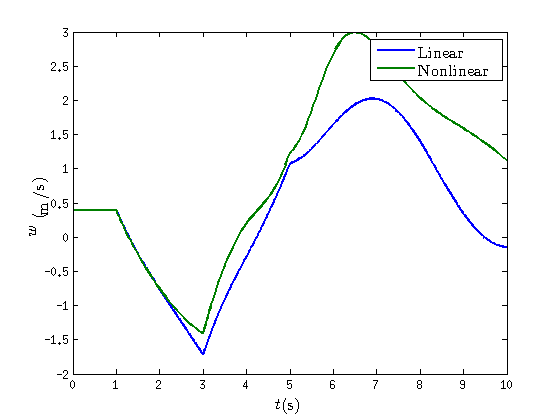

Flight Dynamics simulation
This demo shows how to simulate the flight of a helicopter that is initially 'in trim', whose state conditions are perturbed, in which the pilot modifies the control variables, and that flies through an air volume in which wind velocity is known.
Contents
Introduction
Flight Dynamics of a helicopter is a complex problem that involves a large number of interacting subsystems, containing all of them several variables and equations to be solved. However, it is possible to sumarize this problem in the next system of 9 Differential Equations: 6 from Newton-Euler laws for forces and moments and 3 angular relationships for the helicopter reference system:
where is the state vector containing the state dynamic variables (velocity, angular velocity, Euler angles and trajectory) and is the control vector (colective and cyclic pitch for the main rotor and colective pitch for the tail rotor).
Once initial conditions are set for the problem and control variables are defined for a period of time, it is posible to integrate this system so that the solution represents the evolution of the helicopter dynamics.
Nevertheless, solving such a big problem can lead to long periods of time to calculate the helicopter Dynamics for just a few seconds of flight, so sometimes it is useful to simplify the problem by linearising the equations (There are some other important reasons to perform linearized analysis). In this case, there is an additional condition: the initial state must be a Trim State, and both state and control vectors are now a perturbation from Trim. The linear problem can be written as it follows:
where is the stability matrix and is the control matrix and state and control vectors are referred to variations from Trim State. The linear solution will be valid as long as perturbations from it do not exceed certain limits.
Both linear and nonlinear problems can be solved by using getndHeLinDynSolution and getndHeNonLinearDynamics, repectively, following a similar procedure, that starts with the definition of initial conditions, control variables and wind state.
clc clear all close all options = setHeroesRigidOptions; options.GT = 0;
Definition of initial conditions, control variables and wind state
First of all, atmosphere conditions and a helicopter model must be selected for the simulation.
atm = getISA;
rho0 = atm.rho0;
g = atm.g;
H = 0;
he = PadfieldBo105(atm);
he.tailRotor.bm = 0.1; % Reduced value of tail rotor blade mass
As calculation requires nondimensional variables, it is necessary to calculate the nondimensional helicopter ndHe
ndHe = rigidHe2ndHe(he,atm,H);
In this case, initial flight conditions are those corresponding to a straight flight with slideslip angle:
FC0 = {'VOR',0.05,...
'betaf0',0,...
'gammaT',0,...
'cs',0,...
'vTOR',0};
The next step is to define the interval of time for the simulation (in this case, 10 seconds of flight) and make it nondimensional by using helicopter properties:
tdata = linspace(0,10,1001); OmegaRated = he.mainRotor.Omega; R = he.mainRotor.R; taudata = tdata*OmegaRated;
Wind state is defined for all the values of time that have been given previously, and its initial value and variation from it are saved for later calculations:
muWT = zeros(3,length(taudata)); muWT0 = muWT(:,1); DeltamuWT = zeros(3,length(taudata)); for i = 1:length(taudata) DeltamuWT(:,i) = muWT(:,i)-muWT0; end
At this point, initial nondimensional Trim State must be calculated:
ndTs0 = getNdHeTrimState(ndHe,muWT0,FC0,options);
Solving trim... 1 of 1
Here, the perturbation vector for initial state variables and the matrix corresponding to control variation from its initial values are defined:
Deltandx0 = zeros (12,1); Deltaup = zeros(4, length(taudata));
To end with the problem definition, matrix for the Stability Augmentation System is given by:
ndkSAS = zeros(7,12);
Response to control
Firstly, it is possible to study the helicopter behaviour when the pilot implement a step input in the collective path for 2 seconds, then a negative step is introduced for another 2 seconds and, to end with, initial value is recovered for the last seconds of simulation:
for i=101:300 Deltaup(1,i) = pi/180; end for i=301:500 Deltaup(1,i) = -pi/180; end
Matrices for the lineal problem, are obtained from the initial state:
ndSs = getndHeLinearStabilityState(ndTs0,muWT0,ndHe,options); ndA = ndSs.ndA; ndB = ndSs.ndB; ndC = eye(9); ndD = zeros(9,4); ndBwind = zeros(9,3);
... Getting linear stability states ... Solving Stability... 1 of 1
At this point, we can calculate the linear solution for the problem. As required inputs we have the time vector, stability and control matrices, the initial perturbation, the control law, SAS matrix, the wind velocity variation, the initial trim state and the selected options:
ndlinearSolution = getndHeLinDynSolution(taudata,ndA,ndB,ndC,ndD,ndBwind,... Deltandx0,Deltaup,ndkSAS,... DeltamuWT,ndTs0,options);
Solving Linear problem...
Nondimensional solution can be transformed to dimensional with ndDynamicSolution2DynamicSolution:
LinearDynamics = ndDynamicSolution2DynamicSolution(ndlinearSolution,he);
By following a similar procedure, nonlinear solution is given by:
ndNlD = getndHeNonLinearDynamics(taudata,Deltandx0,Deltaup,ndkSAS,muWT,...
ndTs0,ndHe,options);
NonLinearDynamics = ndDynamicSolution2DynamicSolution(ndNlD,he);
Solving Nonlinear problem...
With all this, both solutions can be studied. Firstly plot options are set:
set(0,'defaultlinelinewidth', 2); set(0,'DefaultAxesFontsize',14,'DefaultAxesFontname','Times New Roman');
Before comparing dynamic results, the selected control law for the simulation is:
figure plot(NonLinearDynamics.time.solution,NonLinearDynamics.control.theta0,... NonLinearDynamics.time.solution,NonLinearDynamics.control.theta1S,... NonLinearDynamics.time.solution,NonLinearDynamics.control.theta1C,... NonLinearDynamics.time.solution,NonLinearDynamics.control.theta0tr) title('Control') legend('$$\theta_0$$','$$\theta_{1S}$$',... '$$\theta_{1C}$$','$$\theta_{a}$$')

For both problems (linear and nonlinear), the solution consists of 9 dynamic variables (velocity, angular velocity and Euler angles) and 3 corresponding to trajectory (in earth axes). For the nonlinear problem, longitudinal variables follow the next variation:
figure subplot(2,2,1) plot(NonLinearDynamics.time.solution,NonLinearDynamics.state.u) xlabel('$$t$$(s)') ylabel('$$u$$ (m/s)') subplot(2,2,2) plot(NonLinearDynamics.time.solution,NonLinearDynamics.state.w) xlabel('$$t$$(s)') ylabel('$$w$$ (m/s)') subplot(2,2,3) plot(NonLinearDynamics.time.solution,NonLinearDynamics.state.omy) xlabel('$$t$$(s)') ylabel('$$\omega_y$$ (rad/s)') subplot(2,2,4) plot(NonLinearDynamics.time.solution,NonLinearDynamics.state.Theta) xlabel('$$t$$(s)') ylabel('$$\Theta$$ (rad)')
Equally, lateral-directional variables, except yaw angle, evolve as it follows:
figure subplot(2,2,1) plot(NonLinearDynamics.time.solution,NonLinearDynamics.state.v) xlabel('$$t$$(s)') ylabel('$$v$$ (m/s)') subplot(2,2,2) plot(NonLinearDynamics.time.solution,NonLinearDynamics.state.omx) xlabel('$$t$$(s)') ylabel('$$\omega_x$$ (rad/s)') subplot(2,2,3) plot(NonLinearDynamics.time.solution,NonLinearDynamics.state.Phi) xlabel('$$t$$(s)') ylabel('$$\Phi$$ (rad)') subplot(2,2,4) plot(NonLinearDynamics.time.solution,NonLinearDynamics.state.omz) xlabel('$$t$$(s)') ylabel('$$\omega_z$$ (rad/s)')
As both problems have been solved, a comparison between linear and nonlinear solution can be made. For example, vertical velocity (in fuselage axes) differs from one to the other:
figure plot(LinearDynamics.time.solution,LinearDynamics.state.w,... NonLinearDynamics.time.solution,NonLinearDynamics.state.w) xlabel('$$t$$(s)') ylabel('$$w$$ (m/s)') legend('Linear','Nonlinear')
And the pitch angle is:
figure plot(LinearDynamics.time.solution,LinearDynamics.state.Theta,... NonLinearDynamics.time.solution,NonLinearDynamics.state.Theta) xlabel('$$t$$(s)') ylabel('$$\Theta$$ (rad)') legend('Linear','Nonlinear')
Additionally, in order to study how is the movement of the helicopter for this manouver 3D trajectory from both solutions can be represented:
figure plot3(LinearDynamics.trajectory.xG,LinearDynamics.trajectory.yG,... LinearDynamics.trajectory.zG,... NonLinearDynamics.trajectory.xG,NonLinearDynamics.trajectory.yG,... NonLinearDynamics.trajectory.zG) legend('Linear', 'Nonlinear') grid on xlabel('$$x_{G}$$(m)') ylabel('$$y_{G}$$(m)') zlabel('$$z_{G}$$(m)')
Response to initial conditions
As well as response to control have been calculated, it is possible to study the aircraft stability with no variation in its controls, and for a longer interval of time:
tdata = linspace(0,50,1001); taudata = tdata*OmegaRated; Deltaup = zeros(4, length(taudata));
Now, a perturbation in longitudinal velocity (2 m/s) is introduced
Deltandx0 = zeros (12,1); Deltandx0(1)= 2/(OmegaRated*R);
In this case, the solution is calculated by:
ndlinearSolution2 = getndHeLinDynSolution(taudata,ndA,ndB,ndC,ndD,ndBwind,... Deltandx0,Deltaup,ndkSAS,... DeltamuWT,ndTs0,options); LinearDynamics2 = ndDynamicSolution2DynamicSolution(ndlinearSolution2,he); ndNlD2 = getndHeNonLinearDynamics(taudata,Deltandx0,Deltaup,ndkSAS,muWT,... ndTs0,ndHe,options); NonLinearDynamics2 = ndDynamicSolution2DynamicSolution(ndNlD2,he);
Solving Linear problem... Solving Nonlinear problem...
For example, longitudinal velocity can be represented in order to see how is the effect of the perturbation:
figure plot(LinearDynamics2.time.solution,LinearDynamics2.state.u,... NonLinearDynamics2.time.solution,NonLinearDynamics2.state.u) xlabel('$$t$$(s)') ylabel('$$u$$ (m/s)') legend('Linear','Nonlinear')